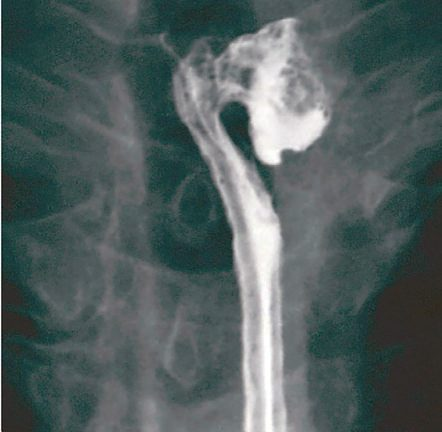
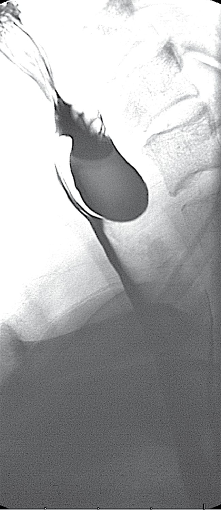
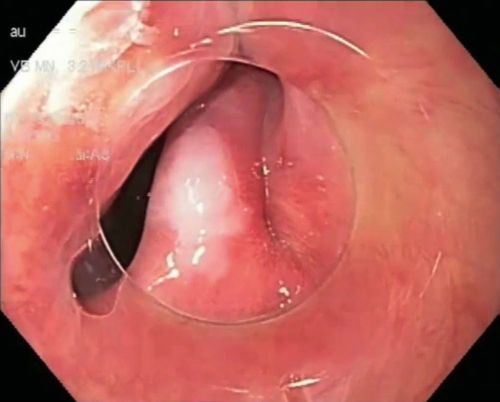
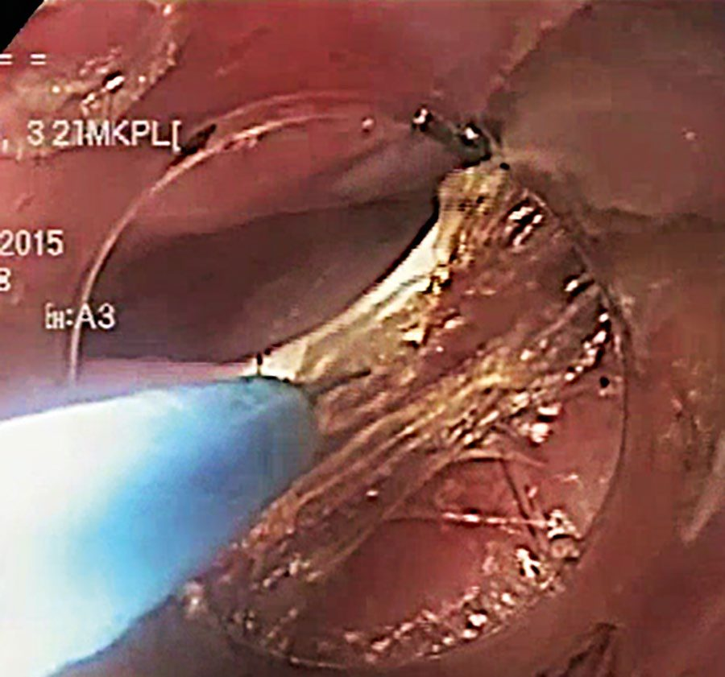

Zenker's Diverticulum
Summary
- Zenker's (pharyngeal, pharyngoesophageal) diverticulum is a false diverticulum that protrudes through Killian's triangle, a weak area of the posterior pharyngeal wall between the oblique fibres of thyropharyngeus and the transverse fibres of cricopharyngeus [1][2].
- It is the most common oesophageal diverticulum, typically affecting patients over age 60, more common in men than women [2][3].
- Treatment centres on division or myotomy of the cricopharyngeus, with or without excision or suspension of the pouch itself [3].
Definition
- Zenker's diverticulum is a false pulsion diverticulum, only mucosa and submucosa herniate through Killian's triangle, which is bounded inferiorly by the cricopharyngeal muscle and laterally by the oblique fibres of the inferior pharyngeal constrictor [3].
- It is classified among the pharyngeal (as opposed to midoesophageal or epiphrenic) oesophageal diverticula [1].
- It is a cervical pulsion diverticulum located posteriorly, occurring specifically between the superior pharyngeal constrictors and the inferior cricopharyngeus (Killian's triangle) [4].
Pathophysiology
- The diverticulum is usually secondary to a lack of coordination between pharyngeal contraction and opening of the upper oesophageal sphincter (UES), a pulsion diverticulum resulting from increased intraluminal pressure during swallowing against a cricopharyngeus that fails to relax appropriately [1][3][4].
- Videofluoroscopic and manometric studies have not fully elucidated the cause: many patients show normal UES relaxation with swallowing, while others show incomplete pharyngeal relaxation, early cricopharyngeal contraction, and abnormal pharyngeal contraction waves [2].
- As the diverticulum enlarges it almost invariably deviates toward the left side of the neck, and the fundus can descend into the mediastinum [1][2].
- The physiological upper oesophageal sphincter mechanism is formed by the oblique thyropharyngeus fibres, the transverse cricopharyngeus fibres, and the circular fibres of the upper oesophagus [2].
Clinical features
- Dysphagia is the most common symptom, present in about 80–90% of patients [3].
- As the diverticulum enlarges, patients may experience regurgitation of undigested food, sometimes hours after eating, particularly when bending or lying down, and may wake at night with throat tightness and coughing fits [2].
- Recurrent, unexplained chest infections from aspiration of pouch contents are a recognised presentation, and about 30% of patients have associated GERD [2][3].
- Patients can also experience halitosis and gurgling sounds in the neck on swallowing, and as the pouch grows it may form a visible neck swelling [2][3].
- Symptoms per the ABSITE Review include upper esophageal dysphagia, choking, halitosis, and regurgitation of non-digested food [4].
Etiology
The underlying mechanism is failure of the cricopharyngeus to relax normally during swallowing, generating a pulsion force that herniates mucosa through the natural weak point of Killian's triangle [1][4]. Another area of potential weakness where a similar diverticulum can form is the "Killian-Jamieson area," located just below the cricopharyngeal muscle [3].
Diagnosis
- A barium swallow (thin barium emulsion), ideally as part of a videofluoroscopic swallowing study, shows the position (at the level of C5–C6) and size of the diverticulum, or a prominent cricopharyngeal bar without an associated diverticulum; it also provides information on pharyngeal contraction waves and UES performance [2][3][4].
- Endoscopy to exclude other pathology (including the rare occurrence of carcinoma within the pouch) must be performed with great caution given the risk of iatrogenic perforation [2][3][4].
- Oesophageal manometry can show lack of coordination between the pharynx and UES and a hypertensive UES, and also localises the LES for ambulatory pH monitoring in patients suspected of concurrent GERD [3].



Scoring and Severity
Not covered in source textbooks.
Treatment and Management
- Surgery is indicated for progressive symptoms, particularly with a prominent cricopharyngeal bar and abnormal UES mechanism causing significant dysphagia; in most patients the pouch itself is contributing to underlying debilitation, so surgery is generally recommended in all but the most unwell patients, mindful of the risk of recurrent aspiration pneumonia [2].
- Diverticula smaller than 2 cm rarely require treatment [3].
- Preoperative optimisation includes chest physiotherapy and attention to respiratory, cardiovascular, and nutritional status [2].
- Postoperatively, if the preoperative evaluation shows pathologic gastroesophageal reflux, medical or surgical antireflux therapy should be given, as aspiration risk increases after UES resection [3].
Surgeries
- The essential surgical step in all approaches is myotomy of the cricopharyngeus (and the upper 3 cm of the posterior oesophageal muscle wall), which eliminates the functional obstruction of the UES; this is considered the key therapeutic manoeuvre, and the diverticulum itself may either be resected or simply suspended [3][4]. Open transcervical approach: via a left-sided neck incision along the sternocleidomastoid, the cricopharyngeus muscle is divided completely with the myotomy extended onto the oesophageal muscle wall for about 3 cm below the diverticulum; circumferential dissection is avoided to reduce risk to the left recurrent laryngeal nerve [3].
- Small diverticula (<2 cm) should not be resected; larger ones can be resected (typically stapled, with a bougie in place to avoid narrowing the lumen) or suspended/fixed upward to the prevertebral fascia with the apex pointing cranially, which avoids a suture line and lowers leak risk [1][3].
- Diverticulopexy (suspension), rather than diverticulectomy, is associated with a lower risk of fistula formation, though not of hematoma, recurrent nerve paralysis, phonation difficulty, or Horner syndrome [6].
- A left cervical incision is standard, with drains left in place and an esophagogram obtained on postoperative day 1 [4]. Endoscopic approaches: rigid endoscopy uses a bivalve diverticuloscope with one blade in the diverticulum and one in the oesophagus, exposing the cricopharyngeal "bar," which is then divided with an endoscopic linear stapler fired repeatedly until the pouch base is reached, opening the pouch into the oesophageal lumen and dividing the cricopharyngeus simultaneously [2][3].
- Endoscopic stapling requires a diverticulum of at least 2–3 cm to accommodate the stapler; both rigid and flexible endoscopic techniques report about a 90% success rate [3][4].
- Flexible endoscopic division uses a needle knife, hook knife, or argon plasma coagulation to divide the septum, with endoclips placed afterward to close the mucosa [3].
- CO2 laser division of the bar is an emerging alternative to stapling in some centres [2].
- Peroral endoscopic myotomy (Z-POEM) has also been applied to Zenker's diverticulum with good results (roughly 90% success), with a complication rate around 6%, mostly perforation or bleeding [3].

Complications
Postoperative complications after open diverticulectomy include fistula formation, abscess, hematoma, recurrent laryngeal nerve paralysis, phonation difficulties, and Horner syndrome, occurring in about 2–3% of cases; the recurrence rate of the diverticulum is 5–10% [3][6]. Endoscopic stapling/division carries a small risk of perforation or bleeding [3].
Prognosis
Not covered in source textbooks.
References
- Bailey & Love's Short Practice of Surgery, 28th ed., Ch. 66, The oesophagus
- Bailey & Love's Short Practice of Surgery, 28th ed., Ch. 52, The pharynx, larynx and neck
- Sabiston Textbook of Surgery, 22nd ed., Ch. 83, Benign Esophageal Disorders
- The ABSITE Review, 2022, Ch. Esophagus
- Sabiston Textbook of Surgery, 22nd ed., Ch. 12
- Schwartz's Principles of Surgery: ABSITE and Board Review, Ch. 25, The Esophagus and Diaphragmatic Hernia